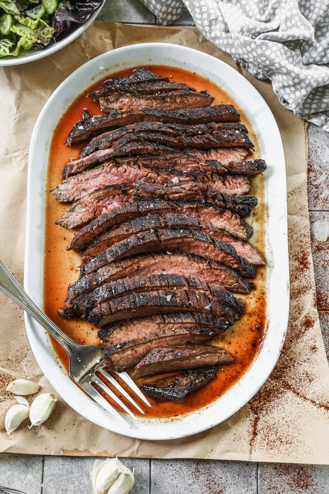

Fish Tacos

Description
Fish tacos are a delicious and easy-to-make dish perfect for a quick dinner. This recipe combines crispy fish, fresh toppings, and a flavorful sauce to create a satisfying meal.
Ingredients
Fish
- 1 lb cod fillets, cut into strips
- 1 cup all-purpose flour
- 2 eggs, beaten
- 1 cup panko bread crumbs
- 1 teaspoon salt
- 1 teaspoon black pepper
- Vegetable oil for frying
Toppings
- 2 cups shredded cabbage
- 1/4 cup chopped cilantro
- 1/2 cup diced red onion
- 1/4 cup sour cream
- 1/4 cup mayonnaise
- 2 tablespoons lime juice
- 8 small flour tortillas
Steps
- Gather all ingredients.
- In a bowl, mix flour, salt, and pepper. In another bowl, place the beaten eggs. In a third bowl, place the panko bread crumbs.
- Dip each fish strip into the flour mixture, then the egg, and finally the panko bread crumbs, ensuring each piece is well coated.
- Heat vegetable oil in a large skillet over medium-high heat.
- Fry the fish strips in the hot oil until golden brown and cooked through, about 3-4 minutes per side. Drain on paper towels.
- In a small bowl, mix sour cream, mayonnaise, and lime juice to create the sauce.
- Warm the tortillas in a dry skillet or in the microwave.
- Assemble the tacos by placing fish strips in the tortillas and topping with shredded cabbage, cilantro, red onion, and a drizzle of the sauce. Serve immediately and enjoy!